Estatísticas do Servidor Web de elvidracaria.com.br
Estatísticas do Servidor Web de elvidracaria.com.br
Começo do programa em Seg-30-Set-2024 12:51.
Análise de pedidos desde Ter-03-Set-2024 16:25 até Seg-30-Set-2024 07:02 (26,61 dias).
Estatísticas do Servidor Web de elvidracaria.com.brComeço do programa em Seg-30-Set-2024 12:51.
Análise de pedidos desde Ter-03-Set-2024 16:25 até Seg-30-Set-2024 07:02 (26,61 dias).
(Ir a: Início | Sumário Geral | Relatório Mensal | Resumo Diário | Resumo Horário | Relatório de Domínios | Relatório de organizações | Relatório de referência redireccionada | Relatório de referência falhada | Relatório do sítio de referência | Relatório de Leitores | Resumo de Leitores | Relatório de Sistemas Operativos | Relatório de Códigos de Estado | Relatório de Tamanho de Ficheiro | Relatório de Tipos de Ficheiro | Relatório de Directorias | Relatório de Pedidos)
Os valores entre parêntesis referem-se aos 7 dias até 30-Set-2024 12:51.
Pedidos atendidos: 529 (119)
Número médio de pedidos atendidos por dia: 19 (16)
Pedidos de páginas atendidos: 7 (0)
Pedidos não atendidos: 26 (0)
Pedidos redirigidos: 62 (3)
Ficheiros diferentes solicitados: 491 (500)
Servidores diferentes atendidos: 21 (74)
Tráfego total: 177,84 kilobytes (6,99 kilobytes)
Tráfego médio transferido por dia: 6,68 kilobytes (1 022 bytes)
(Ir a: Início | Sumário Geral | Relatório Mensal | Resumo Diário | Resumo Horário | Relatório de Domínios | Relatório de organizações | Relatório de referência redireccionada | Relatório de referência falhada | Relatório do sítio de referência | Relatório de Leitores | Resumo de Leitores | Relatório de Sistemas Operativos | Relatório de Códigos de Estado | Relatório de Tamanho de Ficheiro | Relatório de Tipos de Ficheiro | Relatório de Directorias | Relatório de Pedidos)
Cada unidade ( ) representa 1 pedido de uma página.
) representa 1 pedido de uma página.
| mês | N.ped | Pgs. | |
|---|---|---|---|
| Set 2024 | 529 | 7 |   |
Mês mais movimentado: Set 2024 (7 pedidos de páginas).
(Ir a: Início | Sumário Geral | Relatório Mensal | Resumo Diário | Resumo Horário | Relatório de Domínios | Relatório de organizações | Relatório de referência redireccionada | Relatório de referência falhada | Relatório do sítio de referência | Relatório de Leitores | Resumo de Leitores | Relatório de Sistemas Operativos | Relatório de Códigos de Estado | Relatório de Tamanho de Ficheiro | Relatório de Tipos de Ficheiro | Relatório de Directorias | Relatório de Pedidos)
Cada unidade () representa 1 pedido de uma página.
| dia | N.ped | Pgs. | |
|---|---|---|---|
| Dom | 70 | 0 | |
| Seg | 57 | 0 | |
| Ter | 112 | 7 | |
| Qua | 73 | 0 | |
| Qui | 77 | 0 | |
| Sex | 70 | 0 | |
| Sab | 70 | 0 |
(Ir a: Início | Sumário Geral | Relatório Mensal | Resumo Diário | Resumo Horário | Relatório de Domínios | Relatório de organizações | Relatório de referência redireccionada | Relatório de referência falhada | Relatório do sítio de referência | Relatório de Leitores | Resumo de Leitores | Relatório de Sistemas Operativos | Relatório de Códigos de Estado | Relatório de Tamanho de Ficheiro | Relatório de Tipos de Ficheiro | Relatório de Directorias | Relatório de Pedidos)
Cada unidade () representa 1 pedido de uma página.
| h | N.ped | Pgs. | |
|---|---|---|---|
| 00 | 0 | 0 | |
| 01 | 59 | 0 | |
| 02 | 1 | 0 | |
| 03 | 3 | 0 | |
| 04 | 56 | 0 | |
| 05 | 1 | 0 | |
| 06 | 1 | 0 | |
| 07 | 55 | 0 | |
| 08 | 2 | 0 | |
| 09 | 6 | 0 | |
| 10 | 55 | 0 | |
| 11 | 2 | 0 | |
| 12 | 3 | 0 | |
| 13 | 56 | 0 | |
| 14 | 2 | 0 | |
| 15 | 2 | 0 | |
| 16 | 58 | 1 | |
| 17 | 1 | 0 | |
| 18 | 3 | 1 | |
| 19 | 96 | 5 | |
| 20 | 0 | 0 | |
| 21 | 4 | 0 | |
| 22 | 60 | 0 | |
| 23 | 3 | 0 |
(Ir a: Início | Sumário Geral | Relatório Mensal | Resumo Diário | Resumo Horário | Relatório de Domínios | Relatório de organizações | Relatório de referência redireccionada | Relatório de referência falhada | Relatório do sítio de referência | Relatório de Leitores | Resumo de Leitores | Relatório de Sistemas Operativos | Relatório de Códigos de Estado | Relatório de Tamanho de Ficheiro | Relatório de Tipos de Ficheiro | Relatório de Directorias | Relatório de Pedidos)
Mostrando os domínios, ordenados por quantidade de tráfego.
| N.ped | %bytes | domínio |
|---|---|---|
| 529 | 100% | [endereço numérico não traduzido] |
(Ir a: Início | Sumário Geral | Relatório Mensal | Resumo Diário | Resumo Horário | Relatório de Domínios | Relatório de organizações | Relatório de referência redireccionada | Relatório de referência falhada | Relatório do sítio de referência | Relatório de Leitores | Resumo de Leitores | Relatório de Sistemas Operativos | Relatório de Códigos de Estado | Relatório de Tamanho de Ficheiro | Relatório de Tipos de Ficheiro | Relatório de Directorias | Relatório de Pedidos)
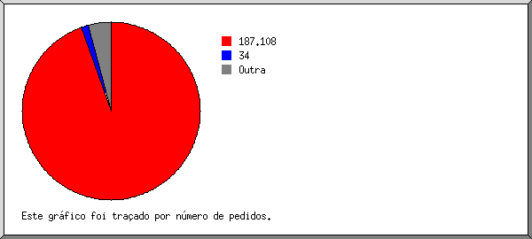
Mostrando as organizações, ordenadas por número de pedidos.
| N.ped | %bytes | organização |
|---|---|---|
| 480 | 14,97% | 187.108 |
| 16 | 33,67% | 205.169 |
| 14 | 31,67% | 34 |
| 6 | 14,58% | 64.202 |
| 3 | 0,14% | 18 |
| 2 | 0,10% | 35 |
| 2 | 2,33% | 54 |
| 2 | 0,10% | 23 |
| 1 | 0,05% | 13 |
| 1 | 0,05% | 51 |
| 1 | 2,29% | 88 |
| 1 | 0,06% | 8 |
(Ir a: Início | Sumário Geral | Relatório Mensal | Resumo Diário | Resumo Horário | Relatório de Domínios | Relatório de organizações | Relatório de referência redireccionada | Relatório de referência falhada | Relatório do sítio de referência | Relatório de Leitores | Resumo de Leitores | Relatório de Sistemas Operativos | Relatório de Códigos de Estado | Relatório de Tamanho de Ficheiro | Relatório de Tipos de Ficheiro | Relatório de Directorias | Relatório de Pedidos)
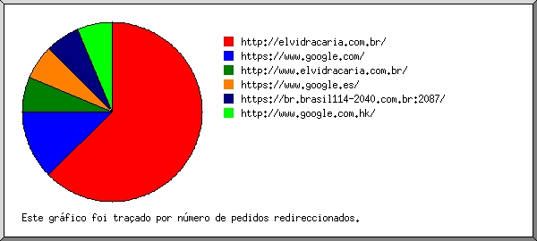
Mostrando os URLs de referência, ordenados por número de pedidos redireccionados.
| N.ped | URL |
|---|---|
| 1 | http://www.elvidracaria.com.br/ |
| 1 | http://elvidracaria.com.br/ |
(Ir a: Início | Sumário Geral | Relatório Mensal | Resumo Diário | Resumo Horário | Relatório de Domínios | Relatório de organizações | Relatório de referência redireccionada | Relatório de referência falhada | Relatório do sítio de referência | Relatório de Leitores | Resumo de Leitores | Relatório de Sistemas Operativos | Relatório de Códigos de Estado | Relatório de Tamanho de Ficheiro | Relatório de Tipos de Ficheiro | Relatório de Directorias | Relatório de Pedidos)
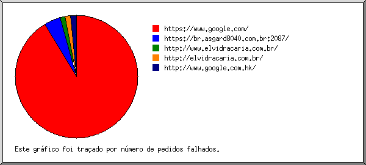
Mostrando os URLs de referência, ordenados por número de pedidos falhados.
| N.ped | URL |
|---|---|
| 3 | https://br.asgard8040.com.br:2087/ |
| 1 | http://elvidracaria.com.br/ |
(Ir a: Início | Sumário Geral | Relatório Mensal | Resumo Diário | Resumo Horário | Relatório de Domínios | Relatório de organizações | Relatório de referência redireccionada | Relatório de referência falhada | Relatório do sítio de referência | Relatório de Leitores | Resumo de Leitores | Relatório de Sistemas Operativos | Relatório de Códigos de Estado | Relatório de Tamanho de Ficheiro | Relatório de Tipos de Ficheiro | Relatório de Directorias | Relatório de Pedidos)
Mostrando os sítios de referência, ordenados por número de pedidos.
| N.ped | sítio |
|---|---|
| 26 | http://elvidracaria.com.br/ |
(Ir a: Início | Sumário Geral | Relatório Mensal | Resumo Diário | Resumo Horário | Relatório de Domínios | Relatório de organizações | Relatório de referência redireccionada | Relatório de referência falhada | Relatório do sítio de referência | Relatório de Leitores | Resumo de Leitores | Relatório de Sistemas Operativos | Relatório de Códigos de Estado | Relatório de Tamanho de Ficheiro | Relatório de Tipos de Ficheiro | Relatório de Directorias | Relatório de Pedidos)
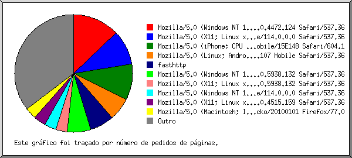
Mostrando os leitores com pelo menos 1 pedido de uma página, ordenados por número de pedidos de páginas.
| N.ped | Pgs. | Leitor |
|---|---|---|
| 14 | 2 | Mozilla/5.0 (Windows NT 10.0; Win64; x64) AppleWebKit/537.36 (KHTML, like Gecko) Chrome/117.0.5938.132 Safari/537.36 |
| 8 | 1 | Mozilla/5.0 (X11; Linux x86_64) AppleWebKit/537.36 (KHTML, like Gecko) HeadlessChrome/92.0.4515.159 Safari/537.36 |
| 6 | 1 | Mozilla/5.0 (Windows NT 10.0; Win64; x64) AppleWebKit/537.36 (KHTML, like Gecko) Chrome/128.0.0.0 Safari/537.36 |
| 6 | 1 | Mozilla/5.0 (X11; Linux x86_64) AppleWebKit/537.36 (KHTML, like Gecko) HeadlessChrome/117.0.5938.132 Safari/537.36 |
| 1 | 1 | Mozilla/5.0 (Linux; Android 14) AppleWebKit/537.36 (KHTML, like Gecko) Chrome/118.0.5993.80 Mobile Safari/537.36 |
| 1 | 1 | Mozilla/5.0 (X11; Linux x86_64; rv:52.0) Gecko/20100101 Firefox/52.0 |
| 493 | 0 | [não listados: 8 Leitores] |
(Ir a: Início | Sumário Geral | Relatório Mensal | Resumo Diário | Resumo Horário | Relatório de Domínios | Relatório de organizações | Relatório de referência redireccionada | Relatório de referência falhada | Relatório do sítio de referência | Relatório de Leitores | Resumo de Leitores | Relatório de Sistemas Operativos | Relatório de Códigos de Estado | Relatório de Tamanho de Ficheiro | Relatório de Tipos de Ficheiro | Relatório de Directorias | Relatório de Pedidos)
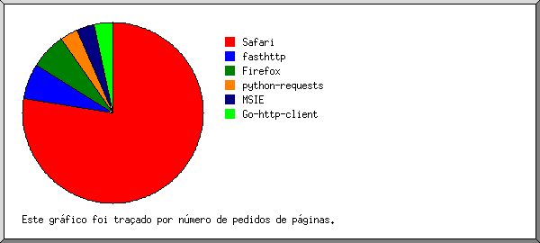
Mostrando os leitores com pelo menos 1 pedido de uma página, ordenados por número de pedidos de páginas.
| no. | N.ped | Pgs. | Leitor |
|---|---|---|---|
| 1 | 37 | 6 | Safari |
| 37 | 6 | Safari/537 | |
| 2 | 1 | 1 | Firefox |
| 1 | 1 | Firefox/52 | |
| 491 | 0 | [não listados: 4 Leitores] |
(Ir a: Início | Sumário Geral | Relatório Mensal | Resumo Diário | Resumo Horário | Relatório de Domínios | Relatório de organizações | Relatório de referência redireccionada | Relatório de referência falhada | Relatório do sítio de referência | Relatório de Leitores | Resumo de Leitores | Relatório de Sistemas Operativos | Relatório de Códigos de Estado | Relatório de Tamanho de Ficheiro | Relatório de Tipos de Ficheiro | Relatório de Directorias | Relatório de Pedidos)
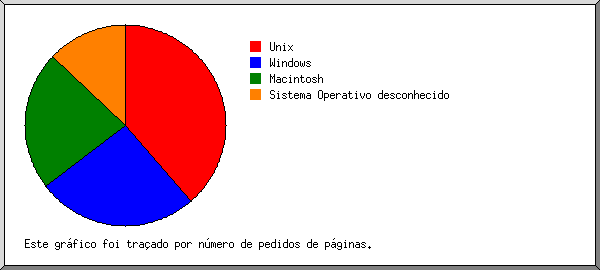
Mostrando os Sistemas Operativos, ordenados por número de pedidos de páginas.
| no. | N.ped | Pgs. | Sistema Operativo |
|---|---|---|---|
| 1 | 16 | 4 | Unix |
| 16 | 4 | Linux | |
| 2 | 22 | 3 | Windows |
| 21 | 3 | Windows NT | |
| 1 | 0 | Windows desconhecido | |
| 3 | 491 | 0 | Sistema Operativo desconhecido |
(Ir a: Início | Sumário Geral | Relatório Mensal | Resumo Diário | Resumo Horário | Relatório de Domínios | Relatório de organizações | Relatório de referência redireccionada | Relatório de referência falhada | Relatório do sítio de referência | Relatório de Leitores | Resumo de Leitores | Relatório de Sistemas Operativos | Relatório de Códigos de Estado | Relatório de Tamanho de Ficheiro | Relatório de Tipos de Ficheiro | Relatório de Directorias | Relatório de Pedidos)
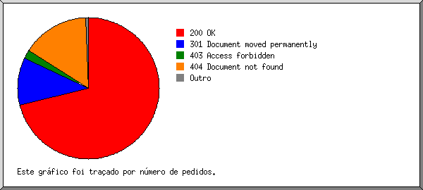
Mostrando os códigos de estado, por ordem numérica.
| N.ped | cod. estado |
|---|---|
| 529 | 200 OK |
| 62 | 301 Document moved permanently |
| 26 | 404 Document not found |
(Ir a: Início | Sumário Geral | Relatório Mensal | Resumo Diário | Resumo Horário | Relatório de Domínios | Relatório de organizações | Relatório de referência redireccionada | Relatório de referência falhada | Relatório do sítio de referência | Relatório de Leitores | Resumo de Leitores | Relatório de Sistemas Operativos | Relatório de Códigos de Estado | Relatório de Tamanho de Ficheiro | Relatório de Tipos de Ficheiro | Relatório de Directorias | Relatório de Pedidos)
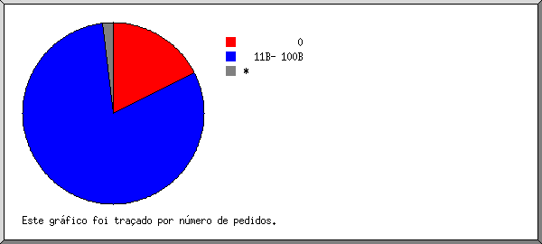
| tamanho | N.ped | %bytes |
|---|---|---|
| 0 | 54 | |
| 1B- 10B | 0 | |
| 11B- 100B | 436 | 15,45% |
| 101B- 1kB | 6 | 0,64% |
| 1kB- 10kB | 28 | 49,37% |
| 10kB-100kB | 5 | 34,53% |
(Ir a: Início | Sumário Geral | Relatório Mensal | Resumo Diário | Resumo Horário | Relatório de Domínios | Relatório de organizações | Relatório de referência redireccionada | Relatório de referência falhada | Relatório do sítio de referência | Relatório de Leitores | Resumo de Leitores | Relatório de Sistemas Operativos | Relatório de Códigos de Estado | Relatório de Tamanho de Ficheiro | Relatório de Tipos de Ficheiro | Relatório de Directorias | Relatório de Pedidos)
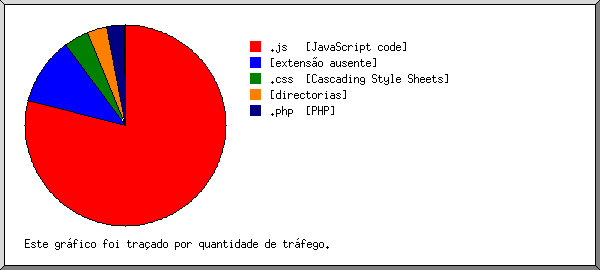
Mostrando as extensões com pelo menos 0,1% do tráfego, ordenadas por quantidade de tráfego.
| N.ped | %bytes | extensão |
|---|---|---|
| 26 | 54,69% | .css [Cascading Style Sheets] |
| 7 | 16,01% | [directorias] |
| 436 | 15,45% | [extensão ausente] |
| 5 | 13,78% | .js [JavaScript code] |
| 55 | 0,06% | [não listadas: 2 extensões] |
(Ir a: Início | Sumário Geral | Relatório Mensal | Resumo Diário | Resumo Horário | Relatório de Domínios | Relatório de organizações | Relatório de referência redireccionada | Relatório de referência falhada | Relatório do sítio de referência | Relatório de Leitores | Resumo de Leitores | Relatório de Sistemas Operativos | Relatório de Códigos de Estado | Relatório de Tamanho de Ficheiro | Relatório de Tipos de Ficheiro | Relatório de Directorias | Relatório de Pedidos)
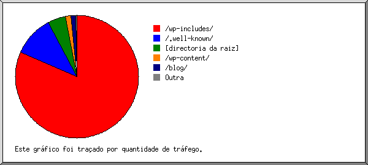
Mostrando as directorias com pelo menos 0,01% do tráfego, ordenadas por quantidade de tráfego.
| N.ped | %bytes | directoria |
|---|---|---|
| 15 | 48,89% | /wp-includes/ |
| 16 | 19,58% | /wp-content/ |
| 62 | 16,08% | [directoria da raiz] |
| 436 | 15,45% | /.well-known/ |
(Ir a: Início | Sumário Geral | Relatório Mensal | Resumo Diário | Resumo Horário | Relatório de Domínios | Relatório de organizações | Relatório de referência redireccionada | Relatório de referência falhada | Relatório do sítio de referência | Relatório de Leitores | Resumo de Leitores | Relatório de Sistemas Operativos | Relatório de Códigos de Estado | Relatório de Tamanho de Ficheiro | Relatório de Tipos de Ficheiro | Relatório de Directorias | Relatório de Pedidos)
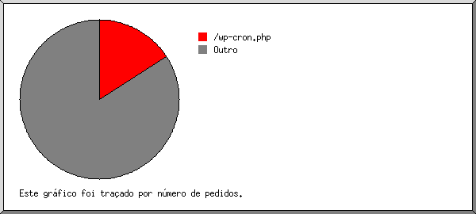
Mostrando os ficheiros com pelo menos 20 pedidos, ordenados por número de pedidos.
| N.ped | %bytes | hora ant. | ficheiro |
|---|---|---|---|
| 54 | 30/Set/24 01:19 | /wp-cron.php | |
| 475 | 100% | 30/Set/24 07:02 | [não listados: 435 ficheiros] |